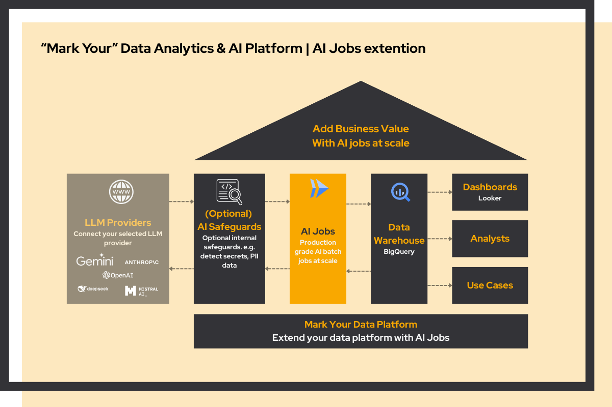

Your organization is growing. You've accumulated data across different systems and you want to become more data-driven. The natural instinct? Hire a data engineer. But at €100K per year, is that really the best investment?
We don't think so. Data engineers lay the foundation, but they don't directly add business value. It's your data analysts who turn data into insights and drive decisions. Why not invest in them instead?
Without a solid foundation, your analysts spend most of their time collecting and cleaning data rather than using it. Mark Your Data Platform handles that layer, so they can focus on the work that actually matters.
A traditional data setup with a data engineer costs around €215K per year. With our Mark Your Data Platform, you skip the data engineer and the expensive tools, saving up to €100K annually.
€100,000*/year - Senior Data Engineer
€35,000*/year - Modern Data Stack
€80,000*/year - Data Analyst
* indicative prices€0 - No data engineer needed
€35,000* - Mark Your Data Platform
€80,000*/year - Data Analyst
Save up to €100K+ annually!
* indicative pricesBottom line: Invest in data analysts who drive business value, not in expensive infrastructure that just moves data around.
We use battle-tested open-source tools. No vendor lock-in, no per-row pricing, no black boxes. And it runs on whatever cloud you're already on — AWS, Azure, or GCP.
Your data platform is the input for AI. AI jobs run alongside your pipelines and data models, process data through an LLM, and write results back to the same warehouse. Set up the framework once, then add use cases one at a time.

Every metric is defined once, tested, and reused across all reports. No more conflicting numbers between teams, no more debating which dashboard is right before you can make a decision.
Built on open-source tools. No per-seat licensing, no per-row pricing, no dependency on a vendor's roadmap. You own the setup and can extend it as you grow.
Your data platform is the input for AI. AI jobs run alongside your existing pipelines and data models, writing their output back to the same platform. When you want to add an AI use case, you extend what's already there. No rebuild, no separate tooling.
How AI jobs workNo black boxes. Everything is transparent, version controlled, and in your hands. Your team can maintain and extend it independently. We set it up, you own it.
We don't just design platforms. We build and run them. The Winparts Data & AI Platform is one example of this approach in production.